“O ESTIGMATIZADO”
INFÂNCIA E VOCAÇÃO
Padre Pio nasceu
em Pietrelcina, na Província de Benevento na Itália, no dia 25 de Maio de 1887, e seus pais
eram Grazio Forgione e Giuseppina di Nunzio, 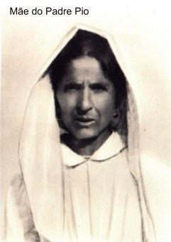
Ele foi Batizado no dia seguinte ao seu nascimento e recebeu o nome de Francesco Forgione. Foi crismado e fez a Primeira Comunhão quando tinha 12 anos de idade. Naquela época, as autoridades italianas haviam baixado um decreto “abolindo a Cruz” nas Escolas e nas repartições públicas, exigindo que fossem retirados todos os crucifixos das dependências do Governo. Conhecendo a grandeza de sua entrega e dedicação a JESUS Crucificado e o impressionante Calvário percorrido em sua existência, tem-se a impressão que o SENHOR fez nascer o Padre Pio exatamente sob o signo da Cruz, para trabalhar pela salvação da humanidade, e em especial, para que todos acolhessem e respeitassem o CRISTO Crucificado, buscando a conversão do coração.
Desde criança revelou um gênio bastante discreto, que o levava a se afastar das brincadeiras dos companheiros durante os recreios e nos momentos de descanso, preferindo permanecer sozinho, se dedicando a prece e a contemplação. Este procedimento lhe favoreceu amadurecer o seu ideal, desabrochando a sua vocação para o sacerdócio. Seus pais apesar de muito pobres, lhe dedicaram um efetivo e integral apoio. E assim, trilhando o caminho para concretizar o seu projeto de vida, com 16 anos de idade, no dia 06 de Janeiro de 1903 entrou no Noviciado da Ordem dos Frades Menores Capuchinhos, no Mosteiro Franciscano de Morcone, tendo vestido o hábito no dia 22 do mesmo mês, com o nome de Frei Pio. Terminado o Noviciado, fez a Profissão dos Votos simples e, no dia 27 de Janeiro de 1907, fez os Votos solenes. Foi ordenado sacerdote na Catedral de Benevento, no dia 10 de agosto de 1910 se consagrando totalmente a DEUS. Abrasado de amor por JESUS CRISTO, com ELE se configurou imolando-se pela salvação do mundo. Em sua vida sacerdotal foi extremamente generoso e perfeito no seguimento e imitação de CRISTO Crucificado. As graças que DEUS lhe concedeu com singular abundância, dispensou-as incessantemente a todas as pessoas, ao longo de seu ministério, servindo os homens e mulheres que a ele acorriam em número sempre maior, gerando uma multidão de filhos e filhas espirituais. Sua vida sacerdotal foi intensa, mas por causa de suas precárias condições de saúde, logo após a sua ordenação, teve que permanecer um tempo com a família, para tratamento e depois, com a saúde em recuperação, esteve em diversos Conventos da Ordem.
SERVIÇO MILITAR
Em 1916 foi convocado para o exército, ocasião em que os médicos puderam constatar que ele possuía um incomum problema de saúde. Foi submetido a duas juntas médicas e os diagnósticos foram iguais, deixando os profissionais abismados: sua temperatura era tão elevada que chegou a destruir um termômetro. Por esta razão, depois de todos os exames, concederam-lhe a baixa, sendo dispensado do serviço militar. A seguir, após uma breve permanência no Mosteiro de Foggia, no dia 4 de Setembro de 1916, foi enviado para o pequeno e arruinado Mosteiro de San Giovanni Rotondo, onde ficou trabalhando como auxiliar do Pároco, a quem carinhosamente chamava de “tio Tore”.
EM SAN GIOVANNI ROTONDO
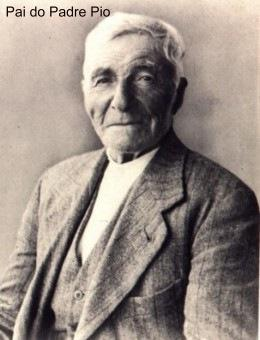
No campo das atividades sociais, sua jovialidade idealista se apressava a guardar zelosamente a comida que sobrava no Mosteiro para oferecê-la aos pobres que vinham bater a sua porta. Fez montar para os jovens da aldeia uma oficina de costura a fim de que tivessem uma profissão, e também, como a localidade era desprovida de qualquer assistência a saúde do povo, montou um pequeno ambulatório, que na continuidade dos anos, com a maciça ajuda popular e sendo o seu sonho amparado pela Vontade Divina, foi transformado no magnífico e maravilhoso Hospital: “Casa do Alívio do Sofrimento”.
Não possuía nada. Vivia em plena e total pobreza e nela estavam englobadas todas as suas preciosas virtudes: da humildade ao aniquilamento, à absoluta obediência e a castidade. Esvaziando-se a si mesmo de tudo, abriu espaço em sua existência permitindo a CRISTO apossar inteiramente dele.
AS CHAGAS DO SENHOR
Com a idade de 31 anos, um fato extraordinário e sobrenatural marcou a vida do Padre Pio na manhã do dia 20 de setembro de 1918. Após a celebração da Santa Missa, estava rezando ajoelhado diante do Crucifixo do coro da pequena Igreja, quando o SENHOR JESUS lhe concedeu de maneira impressionante, a preciosa graça dos estigmas da Crucificação. Eram perfeitamente visíveis, profundos e sangravam. Este fenômeno extraordinário atraiu a atenção de médicos, estudiosos, jornalistas, e pessoas de todas as partes do mundo, que acorreram a San Giovanni Rotondo para conhecer o Padre, ver as chagas e pedir suas orações e bênção.
No dia
22 de outubro de 1918 escreveu ao seu Diretor espiritual Padre Benedetto de San
Marco in Lamis, lhe descrevendo minuciosamente como o SENHOR lhe proporcionou o
inigualável e precioso presente: “O que posso dizer aos que me perguntam como aconteceu a minha crucifixão?
Meu DEUS! Tenho o dever 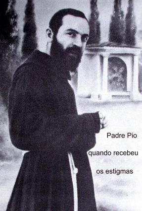
“Foi na manhã do dia 20 do mês passado (Setembro) no coro, depois da celebração da Santa Missa, enquanto rezava diante do Crucifixo fui surpreendido pelo acontecimento, que pareceu ser um doce sonho. Meus sentidos interiores e exteriores, assim como as faculdades da minha alma, se encontraram numa quietude indescritível. Houve um grande silêncio em torno de mim e dentro de mim. Em seguida, senti uma grande paz e um completo abandono, configurado na privação de tudo, numa grande pobreza, e, numa vigorosa e plena disposição para enfrentar a rotina de cada dia”.
“Tudo aconteceu num instante. E quando ocorreu, vi na minha frente um misterioso personagem parecido com aquele que tinha visto na tarde do dia 5 de agosto passado. Este era diferente daquele, porque sangravam as suas mãos, os pés e o peito. A visão me aterrorizou pelo sofrimento do personagem, e não sei dizer o que senti naquele instante. Senti que poderia morrer se DEUS não tivesse intervindo para sustentar o meu coração, o qual saltava fortemente em meu peito. A visão do personagem desapareceu e dei-me conta que minhas mãos, os pés e o peito ficaram chagados e jorravam sangue. Imagine o suplício que experimentei então e que estou experimentando continuamente todos os dias! A ferida do coração sangra continuamente. Começa na quinta feira à tarde e permanece sangrando até o sábado. Meu pai, eu morro cada dia de dor pelo suplício e sofrimento que experimento no mais íntimo da minha alma. Que em tudo seja feita a Vontade do SENHOR e nosso DEUS".
A partir desta época, os visitantes se multiplicaram, de todas as partes do mundo, os fiéis acorriam a este sacerdote estigmatizado, para suplicar a sua potente intercessão junto a DEUS a fim de alcançar as graças necessárias ao seu viver. Em consequência, uma notável expansão comercial também aconteceu, transformando a pequena cidadezinha, numa bela e progressista cidade, com bons hotéis e apreciável infra-estrutura.
CARIDADE COM TOTAL HUMILDADE
Vivendo na humildade, no sofrimento e no sacrifício, sempre pronto a atender um pedido ou uma solicitação mais profunda, Padre Pio sempre inspirado pela graça Divina exercitou a imensidão de seu amor assumindo duas importantes iniciativas no campo da caridade social: a fundação dos "Grupos de Ruego", hoje chamados "Grupos de Oração" , a pedido do Santo Padre o Papa Pio XII, em face dos horrores provocados pela Segunda Guerra Mundial. São grupos de pessoas que se constituem em verdadeiras células vivas, que perseverantemente através da oração e do auxílio, suplicam o Amor de DEUS e a paz do SENHOR, em benefício da humanidade. Os “Grupos de Orações” se espalharam pelo mundo! Hoje, nas cidades dos países cristãos, eles são encontrados em todas as Igrejas, rezando e procurando suavizar os sofrimentos das pessoas. A segunda iniciativa foi uma continuação do projeto em benefício da saúde do povo, que iniciado nos primeiros anos de seu sacerdócio, agora ganhava força e um apoio admirável. O empreendimento cresceu e alcançou notáveis dimensões, tornando-se um moderno e bem equipado Hospital: a «Casa Sollievo della Sofferenza» (Casa do Alívio do Sofrimento), funcionando em plenitude para aliviar os sofrimentos físicos e as misérias morais de tantas famílias. Médicos famosos, de diversas nacionalidades, utilizaram as suas modernas instalações para tratar de seus pacientes. É um dos mais amplos e mais bem aparelhados Hospitais da Europa, tendo recebido doações de dezenas de países que colaboraram enviando vultosas quantias ajudando eficazmente esta obra humanitária tão importante. A ampliação e as novas instalações do Hospital ficaram concluídas e foram inauguradas no dia 5 de Maio de 1956.
FÉ E ORAÇÃO
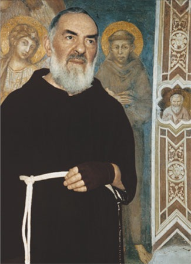
Para o Padre Pio, a fé era à força da vida, a própria vida. Tudo que ele queria e que fazia era à luz da fé, e por isso mesmo, empenhou-se assiduamente na oração. Não havia um horário pré-estabelecido para rezar, em todos os momentos e em todas as oportunidades, acionava carinhosamente o seu colóquio com DEUS. Dizia: «Nos livros procuramos DEUS, na oração encontramo-LO. A oração é a chave que abre o Coração do SENHOR». A fé levou-o a aceitar sempre a suprema Vontade do CRIADOR.
Viveu imerso nas realidades sobrenaturais. Não só era o homem da esperança e da confiança total em DEUS, mas, com as palavras e o exemplo, infundia estas virtudes em todos aqueles que se aproximavam dele. O amor de DEUS inundava a sua vida, saciando todos os seus anseios. A caridade era o princípio inspirador do seu dia: amar a DEUS e fazer com que ELE fosse amado por todos. Exerceu de modo exemplar a virtude da prudência, em todas as ocasiões agia e se aconselhava com o SENHOR. Seu interesse maior era a glória Divina e o bem das almas. A todos tratou com justiça, lealdade e respeito.
Intercedia junto a DEUS em benefício de todos que buscavam o seu auxílio. E o SENHOR, misericórdia infinita, sempre atendia as orações e fazia acontecer milagres e muitas manifestações sobrenaturais maravilhosas e extraordinárias, em atendimento as suas súplicas intercessoras.
Nos casos mais urgentes e complicados o humilde e amoroso frade de Pietrelcina dizia: "Estes só NOSSA SENHORA", tamanha era a sua confiança na “Maezinha do Céu” a quem ele tanto amava.
SANTA MISSA CELEBRADA PELO PADRE PIO
A Santa Missa era o momento mais importante da sua atividade apostólica. Com respeito, dignidade e uma profunda e silenciosa concentração, deixava transparecer em plenitude, a admirável beleza de sua espiritualidade.
Ao toque
do sino, o Padre Pio com os paramentos sagrados caminhava em direção ao Altar. Seus passos
eram pesados e ligeiramente arrastados, com o corpo 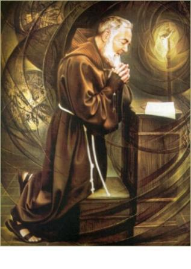
Com voz lenta, firme, mas submissa, quase separando as sílabas, inicia a cerimônia em Nome do PAI, do FILHO e do ESPÍRITO SANTO.
No “Confiteor” (Ato Penitencial) sua voz se torna mais suplicante. Ele se inclina profundamente diante do Tribunal da Misericórdia de DEUS: “Minha culpa, minha culpa, minha máxima culpa”. Os golpes com a mão dilacerada sobre o seu coração também dilacerado convidam a multidão, que prostrada em recolhimento religioso, repete submissamente as palavras do sacerdote. E continua: “Perdoa, ó SENHOR, os nossos pecados, para que, com alma pura, possamos nos aproximar do Altar do Santo Sacrifício”...
E por alguns minutos permanece curvado diante do Altar em profundo ato de adoração.
Depois do “Kyrie eléison” (Senhor perdoai-nos) sua voz se torna mais forte no Hino de Louvor a DEUS, ao mesmo tempo em que suas mãos se elevam súplices em direção ao Céu.
A Liturgia da Palavra se transcorre como num ato de instrução. Sua voz rouca e cadenciada imerge no teor de cada versículo e vai transmitindo a mensagem num misterioso tom profético. Na leitura do Evangelho a voz ganha maior tonalidade, anunciando de frente para toda assembléia a alegria e a luz da boa nova. Em dias da semana não fazia homilia.
O ofertório vai começar e seus olhos parecem imersos numa dimensão infinita, abraçando e convidando os fiéis a louvar, oferecer e suplicar ao SENHOR, durante os minutos da elevação da patena com a Hóstia e do Cálice com o Vinho, na Preparação das Ofertas.
Segue o momento do Lavabo. Mexendo os lábios em sentida oração, o Padre Pio recita o salmo que se ouve apenas umas poucas palavras entrecortadas: “Cantarei todas as suas maravilhas, ó SENHOR”... “amo habitar o lugar da Sua Glória”...
No final do Ofertório, depois de se prostrar profundamente ao rezar “Suscipe Sancta Trinitas” (Receba SANTÍSSIMA TRINDADE), volta-se em direção ao povo e convida: “Oremos irmãos”...
As mãos estigmatizadas do frade permanecem abertas no convite a prece. A seguir, reza piedosamente a Oração Eucarística, às vezes movendo a cabeça, como se estivesse argumentando, ou como se estivesse carinhosamente insistindo diante da misericórdia de DEUS.
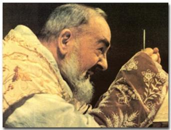
Um respeitoso silêncio domina a assembléia contritamente prostrada de joelhos, enquanto todos os corações presentes, transbordantes de amor e em profundo ato de adoração a DEUS agradeciam a presença Divina e suplicavam o auxílio do SENHOR para suas vidas.
Seguem-se as orações de súplicas pelas intercessões dos Santos, pelos fiéis, pela Igreja e pelos mortos, e também, suplicando a intercessão da Santa e gloriosa VIRGEM MARIA, MÃE DE DEUS e nossa Mãe.
A Oração Eucarística está chegando ao final e o sacerdote elevando diante da assembléia, o Cálice e a Patena com o Corpo e o Sangue do SENHOR, oferece por CRISTO, com CRISTO, e em CRISTO, ao PAI ETERNO na unidade do ESPÍRITO SANTO, toda a honra e toda a glória, agora e para sempre. Amém.
Agora, o celebrante profundamente inclinado sobre o Corpo e o Sangue do SENHOR, reza o “Agnus Dei” (Cordeiro de DEUS), com uma humilde intercessão em benefício dos irmãos presentes e daqueles que estão distantes, pronunciando a súplica comovida: “Miserere nobis” (Tem Misericórdia de nós), que é acompanhada contritamente a meia voz pela assembléia humildemente prostrada.
A ação litúrgica que se segue em preparação a comunhão se desenvolve num íntimo colóquio, do qual se podem ouvir apenas algumas palavras murmuradas pelo Padre: “Não olhes para os meus pecados, mas para a fé que anima a TUA Igreja”. ... “livra-me, por este TEU sacrossanto Corpo e Sangue, de toda iniquidade e de todo o mal”. ... “a comunhão do TEU Sangue que eu, indigno, ouso receber”...
E entramos
no momento solene da Sagrada Comunhão. A mão esquerda mantém a Hóstia Consagrada um
pouco acima da Patena. O corpo se curva sobre os 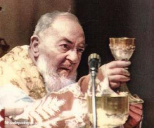
Lentamente, a multidão se sucede na mesa da Comunhão. Os dedos enrijecidos pela dor encontram uma ligeira dificuldade em segurar as Hóstias, movendo-se de um lado para o outro, dentro da âmbula, em busca da melhor posição para segurar cada uma. Mesmo assim, ele mesmo dá Comunhão a todos os fieis. No profundo silêncio somente se ouve o ruído dos passos das pessoas e a voz do Padre que repete: “Corpus Domini nostri Jesu Christi custodiat animam tuam in vitam aeternam. Amen”.(Corpo de NOSSO SENHOR JESUS CRISTO guarde a tua alma para a vida eterna. Amém).
A Missa chega ao final. Purificados cuidadosamente os vasos sagrados e recitadas as últimas preces, o Padre dá a benção final. Todos ajoelhados convergem o olhar para aquela mão com a chaga da Paixão do SENHOR que lhes abençoa, revigorando em cada coração a graça Divina para os embates cotidianos da existência.
(Esta celebração foi descrita pelo saudoso padre franciscano Frei Epifânio do Convento Santa Clara, em Taubaté, Estado de São Paulo, que concelebrou uma Santa Missa com o Padre Pio em Maio de 1957 , em San Giovanni Rotondo)
«Casa Sollievo della Sofferenza»
(Casa do Alívio do Sofrimento)
=A Obra Notável do Padre Pio=
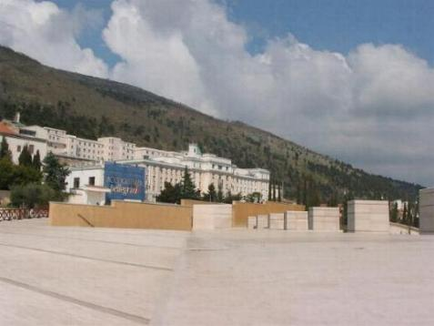
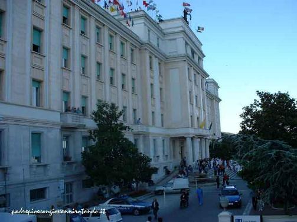
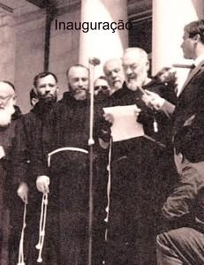
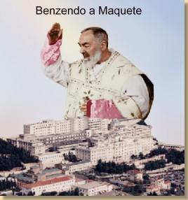
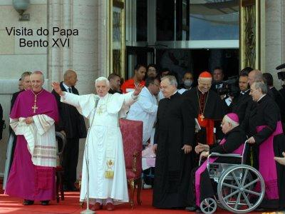